2
This chapter consists of the following sections:
To create a schematic design in OrCAD Capture. In this chapter, you will be introduced to basic design steps, such as placing a part, connecting parts using wires, adding ports, generating parts, and so on.
The steps for preparing your design for simulation using PSpice and for taking your design for placement and routing to the PCB board layout tool are also covered in this chapter.
In this chapter, you will create a full adder design in OrCAD Capture. The full adder design covered in this tutorial is a complex hierarchical design that has two hierarchical blocks referring to the same half adder design.
40 minutes
When creating a new circuit design in OrCAD Capture, it is recommended that you follow the guidelines listed below.
While naming nets, use of the following illegal characters might cause the netlister to fail:
To create a new project, we will use Capture's Project Wizard. The Project Wizard provides you with the framework for creating any kind of project.
Note: An Analog or Mixed A/D project can easily be simulated using PSpice. It also ensures that your design flows smoothly into the PCB layout tool for your board design.
The Create PSpice Project dialog box appears.
Note: When you create a blank project, the project can be simulated in PSpice, but libraries are not configured by default. When you base your project on an existing project, the new project has same configured libraries.
|
7.
|
Click OK to create the FullAdd project with the above specifications. |
The FullAdd project is created. In the project manager window, a design file, fulladd.dsn, is created. Below the design file, a schematic folder with the name SCHEMATIC1 is created. This folder has a schematic page named PAGE1.
You will now modify the design to change the name of both the schematic folder and the schematic page, to HALFADD.
Note: You might need to expand fulladd.dsn to see SCHEMATIC1.
After renaming of the schematic folder and the schematic page, the directory structure in the project manager window should be to similar to the following figure.
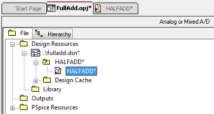
Before you start with the design creation process in OrCAD Capture, you can specify the default characteristics of your project using the design template. A design template can be used to specify default fonts, page size, title block, grid references and so on. To set up a design template in OrCAD Capture, use the Design Template dialog box.
To know more about setting up the design template, see OrCAD Capture User Guide.
In this section, we will create a simple flat half adder design with X and Y as inputs and SUM and CARRY as outputs.
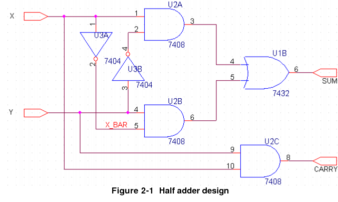
To add parts to your design:
The gates shown in Figure 2-1 are available in the 7400.OLB.
|
|
|
Expand and use the Search for Part section in the Place Part dialog box, to search the library to which the required part belongs.
|
To add 7400.OLB to the project, click the Add Library button (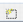).

|
3.
|
Browse to <installation_directory>/tools/capture/library/pspice/7400.olb. |
Select 7400.OLB and click Open. Alternatively, you can double-click 7400.OLB.
The 7400 library appears in the Libraries list box.
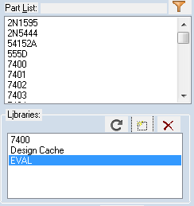
|
4.
|
Select 7400 in the Libraries list. |
|
5.
|
Select 7408 (AND gate) from Part List. |
Note the PSpice symbol () and the layout symbol () that appear below the Packaging box. This denotes that the selected part can be simulated using PSpice and is enabled for the PCB Editor flow.
|
6.
|
Click the Place Part button () or click Enter. |
The part symbol is attached to the pointer.
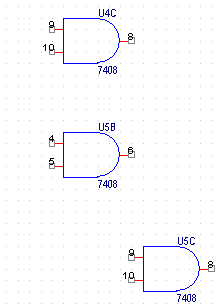
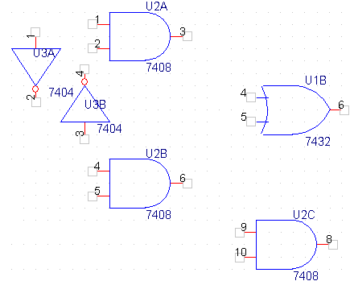
After placing the required parts on the schematic page, you need to connect the parts.
The pointer changes to a crosshair.
Clicking on any valid connection point ends a wire.
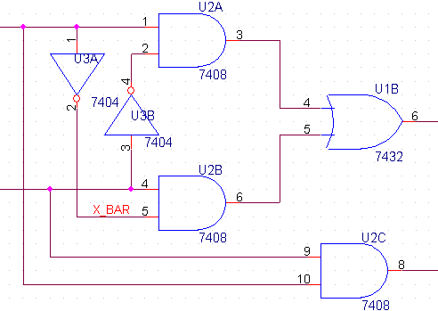
To add input and output ports to the design, complete the following sequence of steps:
|
1.
|
From the Place menu in Capture, select Hierarchical Port. |
The Place Hierarchical Port dialog box appears.
Note: Alternatively, you can select the Place port button from the Tool Palette.
|
3.
|
From the Libraries list box, select CAPSYM. |
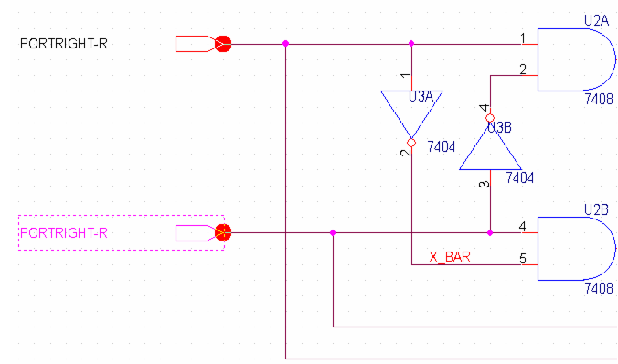
Note: Avoid double-clicking the port symbol, as it displays Property Editor instead of Display Properties dialog box.
Note: You can also use the Property Editor to edit the property values of a component. To know the details, see OrCAD Capture User Guide.
Note: You cannot use the Place Part dialog box for placing ports, because ports in CAPSYM.OLB are only symbols and not parts. Only parts are listed in the Place Part dialog box.

The half adder design is ready. The next step is to create a full adder design that will use the half adder design.
In Capture, you can create hierarchical designs using one of the following methods:
Another method of creating a hierarchical design is to create parts or symbols for the designs at the lowest level, and save the symbols in a user-defined library. You can later add the user-defined library in your projects and use these symbols in the schematic. For example, you can create a part for the half adder design and then instead of hierarchical blocks, use this part in the schematic. To know more about this approach, see Generating parts for a schematic.
In this section, we will create the full adder hierarchical design. The half adder design created in the Creating a flat design section will be used as the lowest level design.
When you create a hierarchical design using the bottom-up methodology, you need to follow these steps.
In this section, we will create a full adder design using bottom-up methodology. The steps involved are:
In the project manager window, the FULLADD folder appears below fulladd.dsn.
The FULLADD folder moves up and a forward slash appears in the folder.
A new page, FULLADD, gets added below the schematic folder FULLADD.
|
8.
|
From the Place menu, choose Hierarchical Block. |
|
11.
|
Specify the Implementation name as HALFADD and click OK. |
The cursor changes to a crosshair.
Note: For more information on Primitive option as well as on Path and Filename options in the Hierarchical Block dialog box, see OrCAD Capture User Guide.
A hierarchical block with input and output ports is drawn on the page.
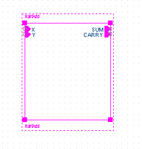
Note: To verify if the hierarchical block is correct, right-click the block and select Descend Hierarchy. The half adder design you created earlier should appear.
Note:
Alternatively, you can use the <CTRL>+<C> and <CTRL>+<V> keys to copy-paste the block.
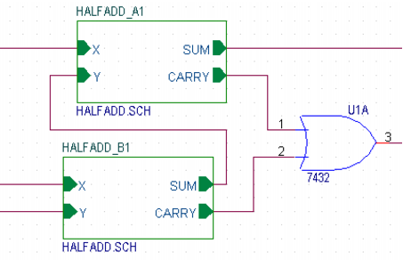
This library is located at <installation_directory>/tools/capture/library/pspice.
The symbol gets attached to the cursor.
|
|
a.
|
Select Place - Hierarchical Port. |
The Place Hierarchical Port dialog box opens.
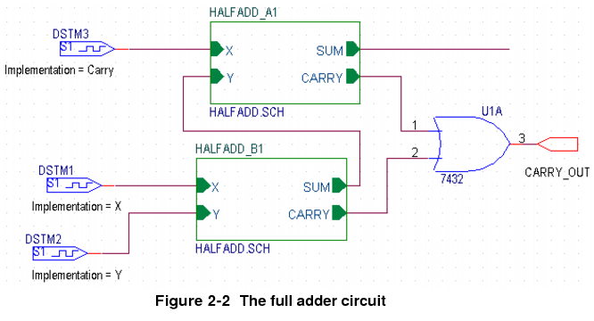
We have only added digital components to the design so far. We will now add a bipolar junction transistor to the SUM port of the HALFADD_A1 block.
|
3.
|
Select ANALOG.OLB and BIPOLAR.OLB and click Open. |
|
4.
|
Select ANALOG.OLB and from the part list, add resistor, R. Place this resistor on the schematic and connect one end of the resistor to the SUM port of HALFADD_A1. See Figure 2-3. |
|
5.
|
From BIPOLAR.OLB, select Q2N2222 and place it on the schematic. See Figure 2-3. |
|
6.
|
BIPOLAR.OLB Complete the circuit by adding a collector resistance, collector voltage, and ground. See Figure 2-3. |
Adding Collector Voltage
Adding Ground
|
7.
|
Add a connector, CON2 to the circuit. To do this, add a Capture library, CONNECTOR.OLB to the project. |
CONNECTOR.OLB is located at <installation_directory>/tools/capture/library.
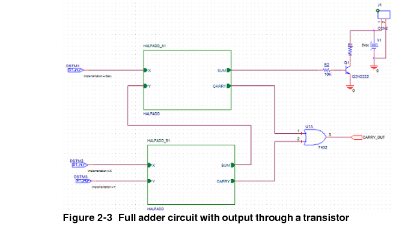
You have successfully created the full adder hierarchical design using the bottom-up methodology. As the components used in this design are from the PSpice library, you can simulate this design using PSpice.
When you create a hierarchical design using the top-down methodology, use the following sequence of steps:
This section provides an overview of the steps to be followed for creating a full adder using top-down methodology.
|
|
a.
|
From the Place menu, choose Hierarchical Block. |
Note:
Alternatively, you can select the Place hierarchical block button 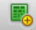from the Tool Palette.
See step 9 to step 11 in the Bottom-up method section.
Note that unlike the hierarchical block drawn in the bottom-up methodology, the hierarchical block in the top-down methodology does not have port information attached to it.
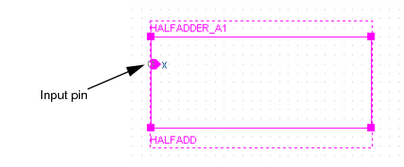
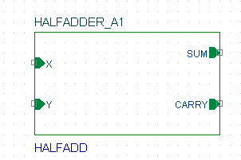
By default, the reference value of the second hierarchical block is HALFADD_A2. Change this value to HALFADD_B1.
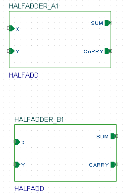
Specify the page name as HALFADD and click OK.
A new schematic pages appears with two input ports, X and Y, and two output ports, SUM and CARRY.
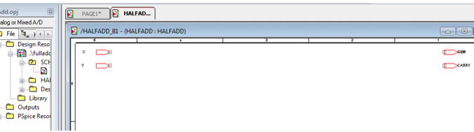
You can now draw the half adder circuit on this schematic page using the steps covered in the Creating a flat design. Also see Figure 2-1.
In the project manager window, a new schematic folder HALFADD gets added below fulladd.dsn.
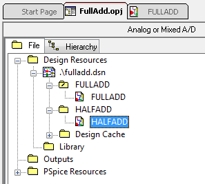
Instead of creating a hierarchical block for the half adder design, you can generate a part for the half adder design and then reuse the part in any design as and when required.
In this section of the tutorial, we will generate a part for the half adder circuit that you created in the Creating a flat design section of this chapter.
To generate a part from a circuit, complete the following steps.
|
2.
|
From the Tools menu, choose Generate Part. |
For this design example, specify the location of fulladd.dsn.
|
4.
|
In the Netlist/source file type drop-down list box, specify the source type as Capture Schematic/Design. |
|
5.
|
In the Part Name text box, specify the name of the part that is to be created, as HALFADD. |
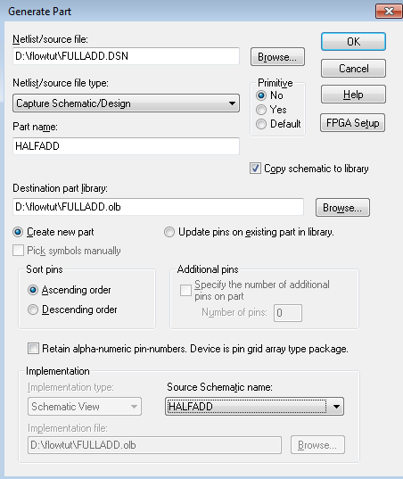
|
10.
|
Click OK to generate the HALFADD part. |
The Split Part Section Input Spreadsheet dialog box opens.
A new library, fulladd.olb, is generated and is visible under the Outputs folder in the project manager window. The new library also gets added in the Place Part dialog box. You can now use the Place Part dialog box to add the half adder part in any design.
To navigate to the lower levels of the hierarchy, right-click a hierarchical block and choose Descend Hierarchy.
Similarly, to move up the hierarchy, right-click and select Ascend Hierarchy.
The Ascend Hierarchy and Descend Hierarchy menu options are also available in the View drop-down menu.
While working with hierarchical designs, you can make changes to the hierarchical blocks as well as to the designs at the lowest level.
To keep the various hierarchical levels updated with the changes, you can use the Synchronize options available in the View drop-down menu.
Select Synchronize Up when you have made changes in the lowest-level design and want these changes to be reflected higher up in the hierarchy.
Select Synchronize Across when you have made changes in a hierarchical block and want the changes to be reflected across all instances of the block.
Select Synchronize Down when you have made changes in a hierarchical block and want these changes to be reflected in the lowest-level design.
After you have created your schematic design, you may need to process your design by adding information for tasks such as, simulation, synthesis, and board layout. This section covers some of the tasks that you can perform in OrCAD Capture while processing your design.
To be able to take your schematic design to your PCB board layout tool for packaging, you need to ensure that all the components in the design are uniquely identified with part references. In OrCAD Capture you can assign references either manually or by using the Annotate command.
In the full adder design, annotation is not required at this stage because by default, unique part references are attached to all the components. This is so because by default, Capture adds part reference to all the components placed on the schematic page. If required, you can disable this feature by following the steps listed below.
|
1.
|
From the Options menu, choose Preferences. |
|
3.
|
In the Auto Reference section, clear the Automatically reference placed parts check box. |
|
4.
|
Click OK to save these settings. |
In case the components in your design do not have unique part references attached to them, you must run the Annotate command.
To assign unique part references to the components in the FULLADD design using the Annotate command, complete the following steps:
Note: Alternatively, you can click the Annotate  button on the toolbar.
button on the toolbar.
|
3.
|
In the Packaging tab of the Annotate dialog box, specify whether you want the complete design or only a part of the design to be updated. Select the Update entire design option. |
|
4.
|
In the Actions section, do the following: |
|
|
a.
|
Select the Incremental reference update option, if part references for all the parts are displayed as ?. |
|
|
b.
|
Select the Unconditional reference update option, if part references are assigned for all the parts, but the part references assigned are not unique. |
Note: To know about other available options, see the dialog box help.
Note: When you select the Update Occurrences option, you get a warning message. Ignore this message because for all complex hierarchical designs, the occurrence mode is the preferred mode. The Use Instances option is shown as preferred because the project type is Analog or Mixed A/D.
The Undo Warning message appears.
A message appears stating that the annotation will be done.
Your design is annotated and saved. You can view the value of updated cross reference designators on the schematic page.
|
|
|
If you select the Annotate command after generating the board layout netlist, you will receive an error message stating that annotating at this stage may cause the board to go out of sync with the schematic design. This may cause further backannotation problems.
|
Using Capture, you can create cross reference reports for all the parts in your design. A cross reference report contains information, such as part name, part reference, and the library from which the part was selected.
To generate a cross reference report using Capture:
|
2.
|
Choose Tools - Cross Reference. |
Alternatively, you can choose the cross reference parts button from the toolbar.
Note: If you want to generate the cross reference report for a particular schematic folder, select the schematic folder before opening the Cross Reference Parts dialog box, and then select the cross reference selection option button.
|
4.
|
In the Mode section, select the Use occurrences option. |
Note: Ignore the warning that is displayed when you select this mode. For complex hierarchical designs, you must always use the occurrence mode.
|
7.
|
Click OK to generate the report. |
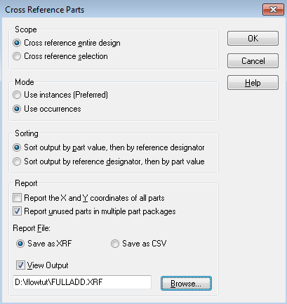
A sample output report is shown in the following figure.
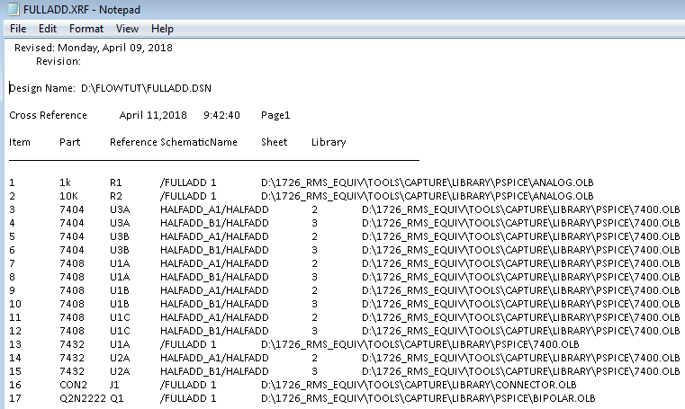
After you have finalized your design, you can use Capture to generate a bill of materials (BOM). A bill of materials is a composite list of all the elements you need for your PCB design. Using Capture, you can generate a BOM report for electrical and as well as non-electrical parts, such as screws. A standard BOM report includes the item, quantity, part reference, and part value.
To generate a BOM report:
|
2.
|
From the Tools menu, select Bill of Materials. |
Note: If you see a warning message stating that it is not the preferred mode, ignore the warning.
By default, the report is named as <designname>.BOM.
The BOM report is generated.
To be able to simulate your design using PSpice, you must have the connectivity information and the simulation settings for the analysis type to be done on the circuit design.
The simulation setting information is provided by a simulation profile (*.SIM). This section covers the steps to be followed in Capture for creating a simulation profile.
Note: PSpice simulation require instance-level annotation present on parts. In case of reference designator related error, ensure to annotate the design in Instance mode before PSpice simulation.
For details about getting your design ready for simulation using PSpice, see Chapter 3, Preparing a design for simulation in the PSpice User Guide.
To create a new simulation profile to be used for transient analysis, complete the following steps:
|
3.
|
In the Inherit From drop-down list, ensure that none is selected and click Create. |
The Simulation Setting dialog box appears with the Analysis tab selected.
|
6.
|
Click OK to save your modifications and to close the dialog box. |
You can now run transient analysis on the circuit. Note that the Simulation Setting dialog box also provides you with the options for running advanced analysis, such as Monte Carlo (Worst Case) analysis, Parametric analysis and Temperature analysis. You may choose to run these as and when required.
Note: To know details about each option in the Simulation Settings dialog box, click the Help button in the dialog box.
You can create a new simulation profile from an existing simulation profile. This section covers the steps for creating a new simulation profile, SWEEP, from an existing simulation profile, named TRAN.
|
1.
|
From the PSpice menu, choose New Simulation Profile. |
|
3.
|
In the Inherit From drop-down list, select FULLADD-TRAN. |
The Simulation Settings dialog box appears with the general settings inherited from the existing simulation profile. You can now modify the settings as required and run PSpice to simulate your circuit.
To be able to take your design to your PCB board layout tool for placement and routing, you need to add the footprint information for each of the components in your design.
By default, some footprint information is available with all the components from the PSpice-compatible libraries located at <installation_directory>\tools\capture\library\pspice. However, these footprints are not valid. You need to change these values to valid footprint values. You can add footprint information either at the schematic design stage in OrCAD Capture or during the board design stage in the PCB board layout tool. In this section, you will learn to add footprint information to the design components during the schematic design stage.
To add footprint information to the OR gate, 7432, in the FULLADD schematic page, complete the following steps.
The Property Editor window appears.
|
2.
|
In the Filter by drop-down list, select Allegro PCB Designer. |
|
4.
|
Press ENTER or click Apply. |
Similarly, add PCB Footprint information for all the components in the design. The component name and the corresponding footprint information to be added is listed in the following table.
For PCB Editor:
Your design is now ready to be taken to the PCB board layout tool for placement and routing.
After you have completed your design, it is recommended that you run design rules check (DRC) to isolate any unwanted design errors that might be there in the design.
To run DRC on the full adder design, complete the following steps:
|
2.
|
From the Tools menu, select Design Rules Check. |
Note: Alternatively, you can select the Design Rules Check button from the toolbar.
By default, the Check entire design option is selected. To run DRC on the complete design, accept the default selection.
|
4.
|
Select the Use occurrences option in the Mode section. |
Note: For complex hierarchical designs, the occurrence mode is the preferred mode. Therefore, ignore the warning that is displayed when you select the Use occurrences option.
|
6.
|
In the Design Rules section, select the type of rules to run, that is electrical and/or physical rules. |
|
|
a.
|
Use the Electrical Rules tab to define electrical rules to test. Also define the report information to be generated from the Reports section. |
|
|
b.
|
Similarly, use the Physical Rules tab to define physical rules to test. Also define the report information to be generated from the Reports section. |
For the current design example, select Check unconnected bus nets (in the Electrical Rules tab) and Report identical part references (in the Physical Rules tab).
When this check box is selected, the DRC report is opened automatically for viewing after the checks are complete.
|
8.
|
In the Report File text box, specify the name and the location of the DRC file to be created. |
For the current design example, specify the filename as fulladd.drc.
After the checks are done, the DRC report is displayed in the following format:
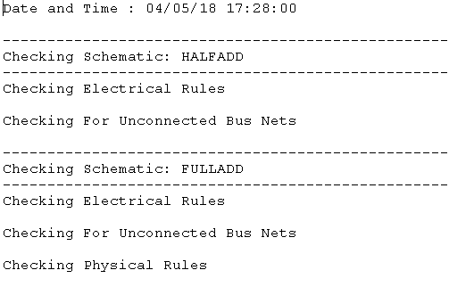
This chapter covered the steps for creating both flat and hierarchical designs using OrCAD Capture. In the process, you were introduced to basic design creation tasks, such as creating projects, adding libraries to a project, placing parts, and editing property values.
In the next chapter, Simulating a design, you will use PSpice for simulating the schematic design created in this chapter. You will be introduced to various types of simulations and their need in the PCB design cycle.
For more information about OrCAD Capture, see OrCAD Capture User Guide and Capture online help.